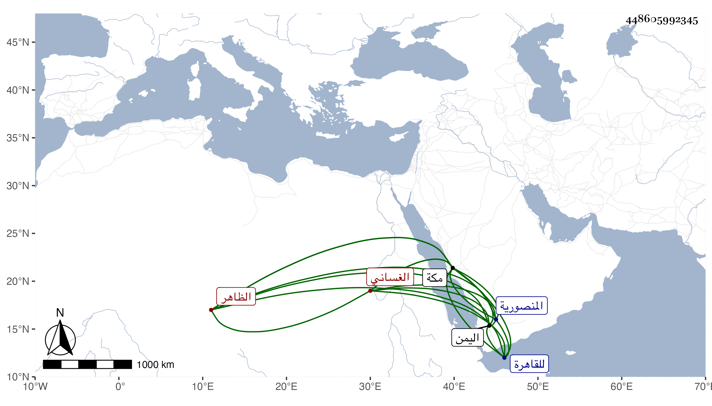

0902Sakhawi.DawLamic.ITO20230111-ara1.EIS1600.448605992345
Biography ID: 448605992345
667
أحمد بن سلطان اليمن الظاهر هزبر الدين يحيى بن الناصر أحمد بن الأشرف إسماعيل بن العباس بن علي بن داود بن يوسف بن عمر بن علي بن رسول شهاب الدين الغساني شقيق إسماعيل والد يحيى الآتي ويعرف بابن سلطان اليمن . ممن فر بعد كحله من شقيقه إلى مكة سنة سبع وأربعين وسافر منها للقاهرة واستولى على المنصورية بمكة وسكنها . مات في ليلة السبت ثامن عشرى جمادى الأولى سنة إحدى وستين . أرخه ابن فهد .
